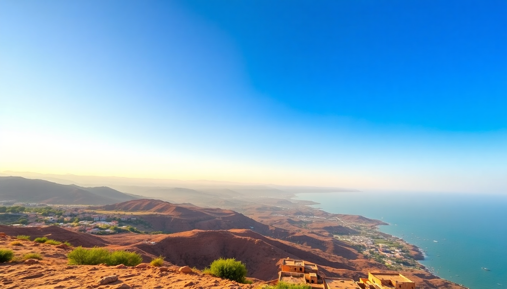

7-Day Morocco Itinerary: Marrakech, Fes & Sahara Desert

I spent a week bouncing between Marrakech’s souk chaos, Fes’s labyrinthine medina, and a night under Saharan stars near Merzouga. Here’s the exact route I took, what worked, and what I’d skip.
How do I get from Marrakech to the Sahara Desert without wasting a day?
The most efficient way is to book a private or shared desert tour that starts in Marrakech and ends in Fes (or vice versa). I used a 3-day tour from GetYourGuide that handled transport, meals, and a camp stay. The drive from Marrakech to Merzouga is about 9 hours, but we broke it into chunks.
- Day 1 (Marrakech → Dades Gorge): We drove through the Tizi n’Tichka Pass (stunning switchbacks), stopped at Aït Benhaddou (the UNESCO ksar used in Game of Thrones), and overnighted in a riad near Dades Gorge.
- Day 2 (Dades → Merzouga): We hit Todra Gorge for a short hike, then arrived in Merzouga by late afternoon. Camel trek at sunset into the Erg Chebbi dunes.
- Day 3 (Merzouga → Fes): Early desert sunrise, then a long drive through the Middle Atlas (watch for Barbary macaques near Azrou).
Skip the “luxury” desert camp add-ons if you’re on a budget — basic camps with a mattress and tagine are more authentic and quiet.
Which riads in Marrakech and Fes are worth the money?
In Marrakech, avoid the overly hyped Instagram riads near Jemaa el-Fnaa — they’re loud and overpriced. I stayed at Riad Kniza (in the medina, but quiet). The staff walked me to the main square and arranged a guide who didn’t push commissions.
In Fes, Riad Fes Mayfe was a steal. It’s a 10-minute walk from the Blue Gate (Bab Bou Jeloud), has a rooftop terrace, and the owner helped me navigate the medina’s 9,000 alleys without getting lost.
- Marrakech: Riad Kniza, Riad Kheirredine (good for couples), or La Mamounia if you want splurge (but book months ahead).
- Fes: Riad Fes Mayfe, Palais Amani (garden courtyard is incredible), or Dar Seffarine (tiny but authentic).
What should I actually do in Marrakech for 2 days?
Two full days is enough. Day one, hit the major sights early to beat crowds. Day two, wander the souks and eat street food.
- Morning Day 1: Jardin Majorelle (book online — the line at 9 AM is already long). Then Yves Saint Laurent Museum next door (worth it for the architecture alone).
- Afternoon Day 1: Bahia Palace (skip the audio guide, just walk through the courtyards). Saadian Tombs (small but impressive).
- Evening: Jemaa el-Fnaa square. Don’t eat at the main stalls — overpriced and touristy. Instead, walk one street off the square to Chez Chegrouni for lamb tagine.
- Day 2: Souk shopping — start at Rahba Kedima (spices and argan oil) and Souk Semmarine (textiles). Bargain hard, start at 50% of the asking price.
Warning: The snake charmers in Jemaa el-Fnaa will try to charge you for photos. Just say “la shukran” (no thanks) and keep walking.
Is Fes as overwhelming as everyone says?
Yes, but in a good way. The Fes el-Bali medina is a UNESCO site and feels like a time capsule. You will get lost — even with Google Maps. I hired a local guide for $20 for a half-day (find them near the Blue Gate, not online). He showed me the Chouara Tannery (the dye pits), Al-Attarine Madrasa (tile work is insane), and the University of al-Qarawiyyin (oldest university in the world).
- Must-see: Chouara Tannery (go to a leather shop rooftop for the view — buy something small to be polite), Bou Inania Madrasa, and Moulay Idriss II Mausoleum (non-Muslims can’t enter, but the exterior is photogenic).
- Food: Café Clock for camel burger (actually good) and Thami’s for a home-cooked tagine.
- Don’t bother: The Mellah (Jewish Quarter) is interesting but has little to see beyond the cemetery.
What’s the best way to see the Sahara Desert near Merzouga?
The dunes at Erg Chebbi are the main draw. I did a 2-hour camel trek at sunset (the camels are grumpy but gentle). The camp I stayed at had a bonfire, Berber drumming, and a surprisingly good dinner. Sleep in the tent, not the “luxury” glamping tent — the wind through canvas is part of the experience.
- Camel trek: Book through your tour or riad. Standard price is about 300 MAD per person.
- Quad biking: Available at the dunes’ edge — fun but dusty. 400 MAD for an hour.
- Sunsets: Walk up a dune away from the camp for total silence. Bring a headlamp — it gets pitch black fast.
Pro tip: Skip the “desert camel ride at sunrise” if you’re tired. The sunset ride is better for photos and less cold.
How do I get from Fes back to Marrakech (or to the airport)?
The train is the best option. ONCF runs a direct train from Fes to Marrakech (about 7 hours, first class is $30). Book first class — it’s air-conditioned, has power outlets, and a snack cart. The station in Fes is Fes-Ville, which is a short taxi ride from the medina (30 MAD). In Marrakech, the Marrakech Gare is a 15-minute walk from Jemaa el-Fnaa.
- Alternative: Fly. Royal Air Maroc has direct flights from Fes to Marrakech (1 hour, about $80).
- To the airport in Marrakech: Take a petit taxi from the medina to Marrakech Menara Airport for 70 MAD. Don’t pay more.
FAQ
Is it safe to travel through Morocco as a solo female traveler? I went with my partner, but I met solo female travelers in both Marrakech and Fes. The main issue is harassment in tourist areas — catcalls and persistent vendors. Dress conservatively (cover shoulders and knees), avoid empty medina streets at night, and use a fake wedding ring if you want. The desert camp is safe; the guides are professional.
Do I need a visa for Morocco? Most nationalities (US, UK, Canada, EU, Australia) get a 90-day tourist visa on arrival. No need to apply in advance. Just have a passport valid for at least 6 months.
What’s the best time of year for this route? March to May and September to November. Avoid July and August (desert heat hits 45°C/113°F). December and January are cold in the desert (near freezing at night) but fine in Marrakech and Fes.
Conclusion
- Plan at least 3 days for the Marrakech-to-Fes desert loop — cramming it into 2 days means 12 hours of driving.
- Stay in riads inside the medina, not modern hotels outside — the experience is worth the noise.
- Hire a local guide in Fes; you’ll see twice as much in half the time.
- Bargain in souks, but don’t be rude — Moroccans appreciate a smile and a fair price.
- Carry cash (MAD) everywhere — cards are rarely accepted outside hotels and big tourist shops.